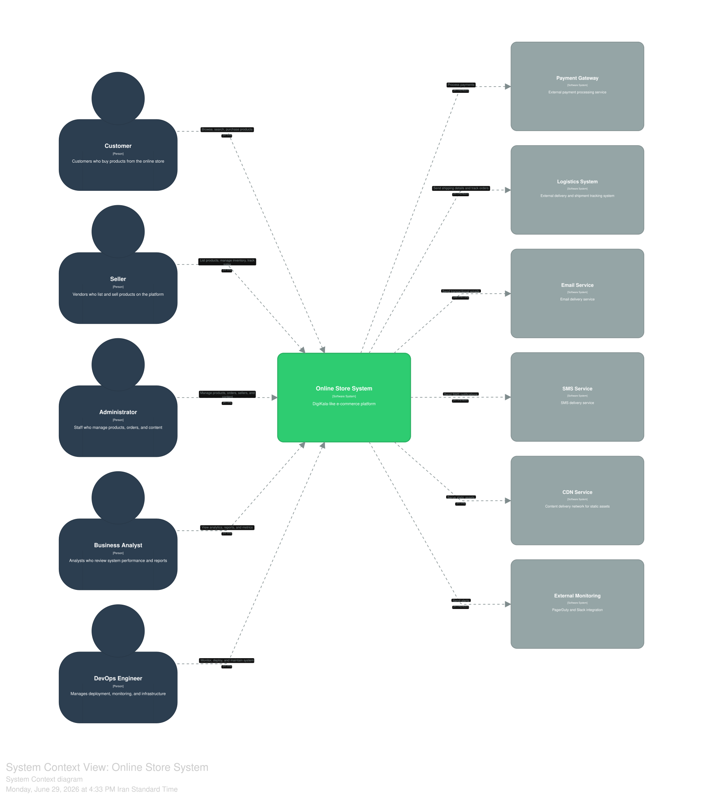

دیدگاه زمینه¶
نمای کلی¶
دیدگاه زمینه¹، سامانه را به عنوان یک جعبه سیاه در نظر گرفته و ارتباطات آن را با دنیای خارج به تصویر میکشد.
در این سطح، جزئیات داخلی سامانه قابل مشاهده نیست و تمرکز بر روی مرزهای سامانه و تعاملات خارجی قرار دارد. این دیدگاه، اولین گام در مدلسازی C4 محسوب میشود و به تمامی ذینفعان پروژه کمک میکند تا درک مشترکی از جایگاه سامانه در اکوسیستم کسبوکار به دست آورند.
نمودار زمینه سامانه¶

نمودار ۱: دیدگاه زمینه سامانه فروشگاه اینترنتی
تحلیل کامل نمودار زمینه¶
سامانه فروشگاه اینترنتی، یک پلتفرم جامع تجارت الکترونیک است که به عنوان یک نهاد مرکزی در اکوسیستم خود عمل میکند. این سامانه با شش گروه کاربری و شش سامانه خارجی در تعامل است که در ادامه به تفکیک تشریح میشوند.
ذینفعان اصلی¶
بر اساس کد معماری C4، شش ذینفع اصلی با سامانه در تعامل هستند:
| ذینفع | نقش | تعامل با سامانه | مکانیسم تعامل |
|---|---|---|---|
| مشتری | خریداران محصولات از فروشگاه اینترنتی | مرور، جستجو، خرید، پرداخت و پیگیری سفارشات | HTTPS از طریق وب/برنامه موبایل |
| فروشنده | عرضهکنندگانی که محصولات خود را در پلتفرم لیست و به فروش میرسانند | ثبت محصول، مدیریت موجودی، قیمتگذاری، مدیریت فروش و پیگیری سفارشات | HTTPS از طریق پنل فروشنده در وب |
| مدیر سامانه | کارکنانی که محصولات، سفارشات و محتوا را مدیریت میکنند | مدیریت کاربران، تأیید فرآیندها، نظارت بر عملکرد، مدیریت محتوا و محصولات | HTTPS از طریق داشبورد مدیریتی وب |
| تحلیلگر کسبوکار | تحلیلگرانی که عملکرد سامانه و گزارشها را بررسی میکنند | دسترسی به دادهها، استخراج بینش، تهیه گزارشهای راهبردی و تحلیل عملکرد | HTTPS از طریق سرویس تحلیل |
| مهندس دواپس | مدیریت استقرار، پایش و زیرساخت | پایش داشبوردها، مدیریت استقرار، نگهداری سامانه و مدیریت هشدارها | HTTPS از طریق پشته پایش |
سامانههای خارجی¶
سامانه برای تکمیل زنجیره ارزش خود، به شش سامانه خارجی وابسته است:
| سامانه خارجی | نقش | نوع تعامل | پروتکل |
|---|---|---|---|
| درگاه پرداخت | پردازش تراکنشهای مالی خارجی | همگام² | HTTPS/REST |
| سامانه لجستیک | مدیریت ارسال کالا و رهگیری سفارشات | ناهمگام³ | HTTPS/REST |
| سرویس ایمیل | ارسال ایمیلهای اطلاعرسانی به کاربران | ناهمگام³ | SMTP/HTTPS |
| سرویس پیامک | ارسال پیامکهای اطلاعرسانی به کاربران | ناهمگام³ | HTTPS/REST |
| شبکه توزیع محتوا | توزیع محتوای ایستا و محافظت در برابر حملات انکار سرویس | همگام² | HTTPS |
| پایش خارجی | ارسال هشدار به PagerDuty و Slack | همگام² | HTTPS/REST |
روایت معماری¶
سامانه فروشگاه اینترنتی، یک پلتفرم مرکزی است که از طریق پروتکل امن HTTPS با کاربران خود ارتباط برقرار میکند و برای ارائه خدمات کامل، به سامانههای خارجی متعددی متصل میشود.
تعامل با ذینفعان¶
مشتریان به عنوان خریداران محصولات، از طریق برنامه وب یا برنامه موبایل به سامانه متصل میشوند و فعالیتهایی نظیر مرور محصولات، جستجو، افزودن به سبد خرید، پرداخت و پیگیری سفارشات خود را انجام میدهند. تمامی این تعاملات از طریق پروتکل HTTPS صورت میپذیرد تا امنیت اطلاعات کاربران تضمین گردد.
فروشندگان به عنوان عرضهکنندگان محصولات، از طریق پنل فروشنده در برنامه وب به سامانه متصل میشوند و به ثبت محصولات جدید، مدیریت موجودی، قیمتگذاری، مدیریت فروش و پیگیری سفارشات خود میپردازند. این تعاملات نیز از طریق پروتکل HTTPS انجام میشود.
مدیران سامانه از طریق داشبورد مدیریتی در برنامه وب، بر عملکرد کل سامانه نظارت میکنند و مسئولیت مدیریت کاربران، تأیید نهایی فرآیندها، مدیریت محتوا و نظارت بر محصولات و سفارشات را بر عهده دارند.
تحلیلگران کسبوکار از طریق سرویس تحلیل به دادههای حاصل از عملکرد سامانه دسترسی دارند و از آن برای استخراج بینش، تهیه گزارشهای راهبردی و تحلیل عملکرد کسبوکار استفاده میکنند.
مهندسان دواپس از طریق پشته پایش، بر سلامت و عملکرد سامانه نظارت میکنند و مسئولیت مدیریت استقرار، نگهداری زیرساخت و مدیریت هشدارها را بر عهده دارند.
تعامل با سامانههای خارجی¶
-
درگاه پرداخت مسئولیت تسویه حساب مالی تراکنشها را بر عهده دارد و ارتباط با آن به صورت همگام از طریق پروتکل HTTPS/REST انجام میشود تا تأیید فوری پرداخت امکانپذیر گردد.
-
سامانه لجستیک مدیریت ارسال کالا و رهگیری سفارشات را انجام میدهد و ارتباط با آن به صورت ناهمگام از طریق پروتکل HTTPS/REST صورت میپذیرد تا وابستگی زمانی بین سامانهها کاهش یابد.
-
سرویس ایمیل و سرویس پیامک ارسال اطلاعرسانیها به کاربران را مدیریت میکنند. این ارتباطات نیز به صورت ناهمگام طراحی شدهاند تا در صورت بروز مشکل در سرویسهای اطلاعرسانی، فرآیند اصلی کسبوکار مختل نگردد.
-
شبکه توزیع محتوا وظیفه توزیع محتوای ایستا (تصاویر، فایلهای جاوااسکریپت و CSS) را بر عهده دارد و با توزیع جغرافیایی محتوا، سرعت بارگذاری صفحات را بهبود میبخشد. همچنین این سامانه به عنوان لایه اولیه محافظت در برابر حملات انکار سرویس عمل میکند.
-
پایش خارجی به طور مستمر سلامت سامانه را پایش کرده و در صورت بروز مشکل، هشدارهای لازم را از طریق PagerDuty و Slack به تیم عملیات ارسال میکند.
فرضیات و وابستگیها¶
فرضیات
- سامانههای خارجی (پرداخت، لجستیک، پیامرسان، شبکه توزیع محتوا) قابل اعتماد هستند و در چارچوب قراردادهای سطح خدمات تعریفشده عمل میکنند.
- کاربران نهایی دارای اتصال اینترنت با سرعت حداقل یک مگابیت بر ثانیه هستند.
- زیرساخت ابری در دسترس و با قابلیت اطمینان بالا در دسترس قرار دارد.
- تمامی تعاملات از طریق پروتکل امن HTTPS انجام میشود.
- کاربران از مرورگرهای مدرن و بهروز استفاده میکنند.
وابستگیهای حیاتی
- درگاه پرداخت: هرگونه قطعی در این سرویس، فرآیند ثبت سفارش را با اختلال مواجه میکند و مستقیماً بر درآمد سامانه تأثیر میگذارد. وابستگی به این سرویس از نوع همگام و حیاتی محسوب میشود.
- سامانه لجستیک: بدون این سامانه، امکان ارسال کالا وجود نخواهد داشت و زنجیره تأمین با اختلال مواجه میشود. این وابستگی از نوع ناهمگام است اما از نظر کسبوکار حیاتی به شمار میرود.
- سرویس احراز هویت: بدون این سرویس، هیچ کاربری نمیتواند وارد سامانه شود و دسترسی به تمام خدمات مسدود میگردد. این وابستگی از نوع همگام و حیاتی است.
- شبکه توزیع محتوا: اگرچه قطعی این سرویس منجر به ازکارافتادگی کامل سامانه نمیشود، اما تأثیر قابلتوجهی بر تجربه کاربری و سرعت بارگذاری صفحات خواهد داشت.
پانویسها¶
¹ نمای سطح بالای سامانه که آن را به عنوان یک جعبه سیاه در نظر گرفته و تعاملات آن را با دنیای خارج نشان میدهد. این دیدگاه، اولین سطح از مدلسازی C4 محسوب میشود.
² ارتباطی که در آن فرستنده و گیرنده به صورت همزمان و با انتظار برای پاسخ عمل میکنند. این نوع ارتباط برای سناریوهایی مناسب است که نیاز به تأیید فوری دارند.
³ ارتباطی که در آن فرستنده و گیرنده نیازی به هماهنگی زمانبندی ندارند و میتوانند به صورت مستقل عمل کنند. این نوع ارتباط برای سناریوهایی مناسب است که تأخیر در پردازش قابلقبول است.